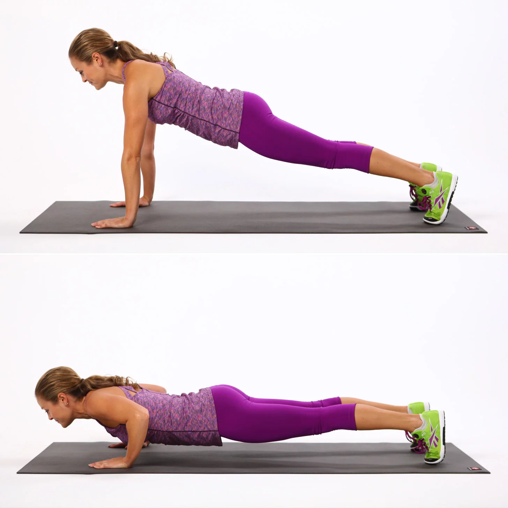

How to Do a Push-Up
A step by step

- Get down on all fours, place hands wider than your shoulders.
- Straighten your arms and legs while keeping your back straight.
- Lower your body until your chest almost touches the floor.
- Pause, then push yourself back up until your arms being fully extended.